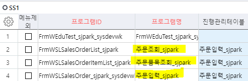
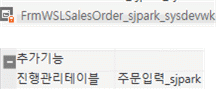
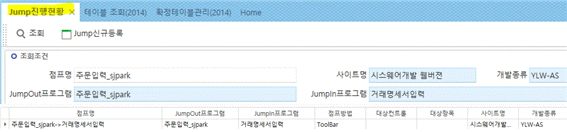

2/22 ACE 확정/중단/진행
- 진행관리테이블 정의 (방법 2가지)
(프로그램에서 사용할 진행관리테이블 정의)
- 1. 웹 – 프로그램 등록(2014) - ‘진행관리테이블’에 추가

** **
-
2. 개발툴
-
프로그램 – 속성 – 추가기능 = 진행관리테이블 ==> 주문입력_sjpark
(주문입력, 주문조회, 주문품목조회 3개 모두 추가)
(추후에 툴바는 ‘주문입력’에만 추가)

============================================================
- Jump진행현황 (cs - 프로그램 등록 – jump 검색 – jump진행현황 실행)

\<\<진행설정.hwp>>
\<\<0222.hwp>>